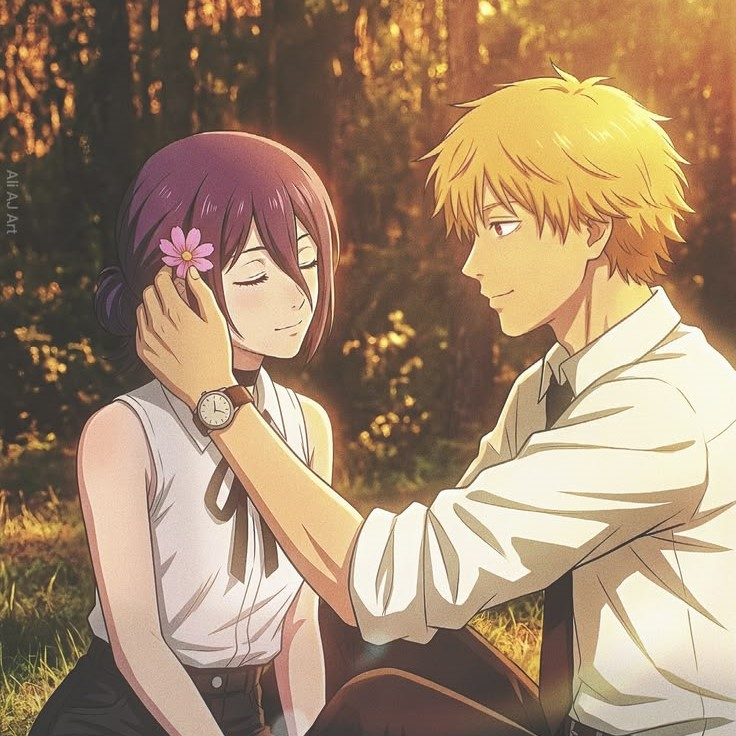
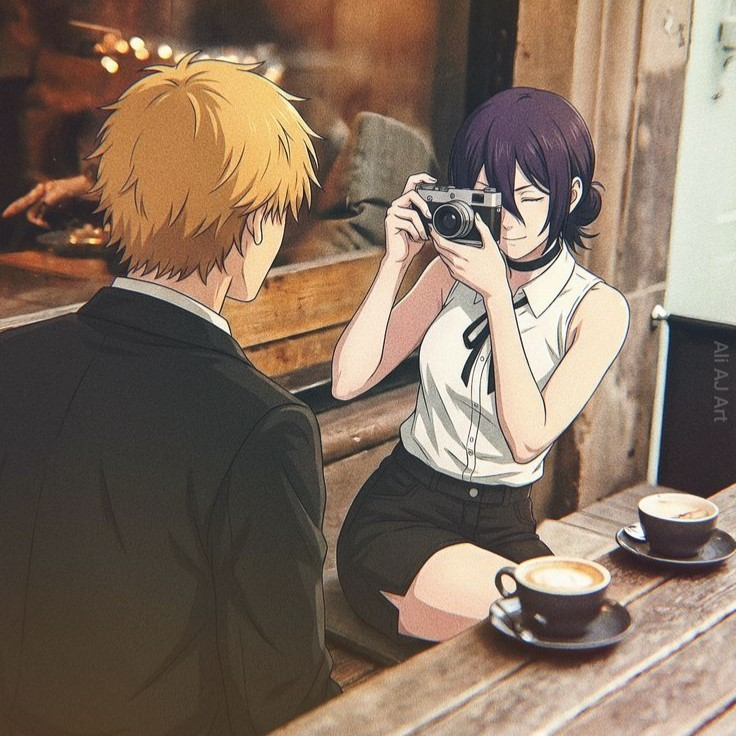
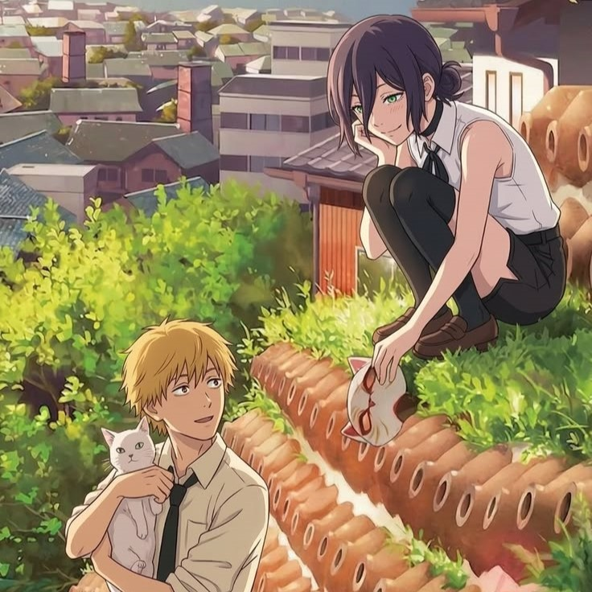

Um cantinho para guardar palavras doces, cartas nunca enviadas e pequenos momentos de afeto — sob as flores de cerejeira que caem devagar, como os sentimentos que a gente guarda.
Ler as postagensEra uma vez uma menina de 15 anos chamada Júlia. A vida dela não era fácil. Sua mãe havia falecido, então ela foi morar apenas com seu pai, Júnior.
Depois de um tempo, seu pai começou a namorar uma mulher chamada Maria. Júlia nunca gostou muito dela, porque Maria sempre a tratava mal. Mas o pior era que o pai de Júlia nunca acreditava nela quando ela tentava contar o que estava acontecendo.
Maria tinha uma filha chamada Sophia, que tinha a mesma idade de Júlia. Sophia era muito mimada e sempre fazia de tudo para provocar Júlia.
Um dia, Júlia foi para o colégio. Quando voltou, seu pai não estava em casa. Só estavam Maria e Sophia.
Quando entrou, Júlia viu a casa completamente suja, enquanto as duas estavam deitadas no sofá.
— Por que a casa está suja assim?! — perguntou Júlia.
Maria respondeu com arrogância:
— A gente deixou assim para você limpar. Agora limpa rápido, porque seu pai está chegando.
Júlia ficou irritada.
— Eu não vou limpar nada! Vocês que sujaram, vocês que limpem!
Sophia levantou gritando:
— Você acha que está falando com suas amiguinhas? Não grita com a minha mãe!
As duas começaram a discutir. De repente, ouviram a porta abrir. Era Júnior, o pai de Júlia.
Maria rapidamente começou a fingir que estava chorando.
— Amor! A tua filha está batendo na minha filha!
— JÚLIA!!! — gritou o pai.
— Por que você está batendo na sua irmã?!
— Pai, mas eu não fiz nada!
— Eu não acredito em você. Vá para o seu quarto agora!
Júlia foi para o quarto muito triste, sentindo que seu pai não acreditava mais nela.
Um novo amor
Um ano se passou.
Júlia conheceu um menino chamado Bernardo. Ele era bonito, gentil e sempre cuidava muito dela. Pela primeira vez, Júlia sentia que alguém realmente se importava com ela.
Um dia, Júlia saiu para ir ao mercado. Bernardo ficou na casa dela esperando.
Quando Júlia saiu, Sophia aproveitou para dar em cima de Bernardo.
— Oi, Bernardo. Sabia que você está bem bonito hoje?
— Oi, Sophia. O que você quer?
— Eu quero você para mim.
Bernardo ficou irritado.
— Para com isso. Eu namoro sua irmã.
— E daí? Ela pode dividir você! — disse Sophia rindo.
— Você é uma idiota.
Nesse momento, Júlia estava voltando para casa. Quando chegou, viu Bernardo esperando na rua.
— Amor, por que você está aqui fora?
— Porque a tua irmã está dando em cima de mim. Eu não quero ficar perto dela.
Júlia ficou indignada.
— Que garota nojenta!
— Vamos para minha casa, disse Bernardo.
Enquanto eles saíam, Sophia ligou para sua mãe e mentiu, dizendo que Júlia tinha batido nela.
Maria voltou correndo para casa.
Pouco depois, Júlia e Bernardo também chegaram.
— A putinha chegou — cochichou Maria para Sophia.
— Oi, Sophia. Oi, Maria — disse Bernardo.
Maria gritou:
— Júlia! Onde você estava que deixou sua irmã sozinha?!
— Eu fui comprar comida para a gente.
Maria olhou para Bernardo.
— E quem é esse menino bonito?
— Meu namorado.
Maria respondeu com desprezo:
— Ele é bonito demais para você. Termina com ele e deixa ele ficar com a Sophia.
Bernardo ficou muito bravo.
— Eu amo a minha namorada.
— Ele me deseja, só não fala para não magoar a Júlia.
A decisão de Bernardo
Outro dia, Maria mandou Júlia sair para comprar pão.
Assim que ela saiu, Sophia tentou novamente dar em cima de Bernardo.
— Vamos fazer o que você deseja fazer comigo?
Bernardo perdeu a paciência.
— Eu não desejo você. Você é mimada e ridícula!
— Eu sei que você quer!
— Sai da minha frente!
Maria ouviu os gritos e apareceu.
Sophia começou a fingir que estava chorando.
— Mãe, o Bernardo disse que vai me bater!.
— Você vai bater na minha filha?!
Bernardo se cansou de tudo aquilo. Ele pegou as roupas de Júlia, colocou em uma mala e disse:
— Eu e a Júlia vamos embora daqui. Vocês são doentes. Ela não merece viver com vocês.
Quando Bernardo saiu da casa, Júlia estava chegando com o pão.
Ela ficou surpresa ao ver as malas.
— O que aconteceu?
Bernardo explicou tudo:
— Sophia deu em cima de mim de novo e mentiu para a mãe dela. Eu não vou deixar você viver nesse lugar. Você vem morar comigo.
Júlia começou a chorar de emoção. Finalmente alguém acreditava nela.
Então eles foram embora juntos.
E, longe de toda aquela maldade, Júlia finalmente encontrou paz, amor e uma nova família.
✨ Fim...
O Romantic Comments nasceu como um pequeno refúgio para quem gosta de guardar sentimentos em palavras — cartas, memórias e poemas curtos, todos escritos com carinho.
Acreditamos que o romance está nos detalhes pequenos: numa pétala que cai no momento certo, num abraço que dura um segundo a mais, numa mensagem guardada para o dia certo.


